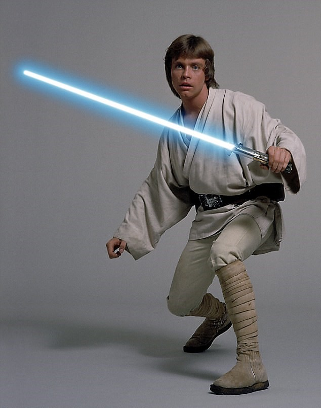
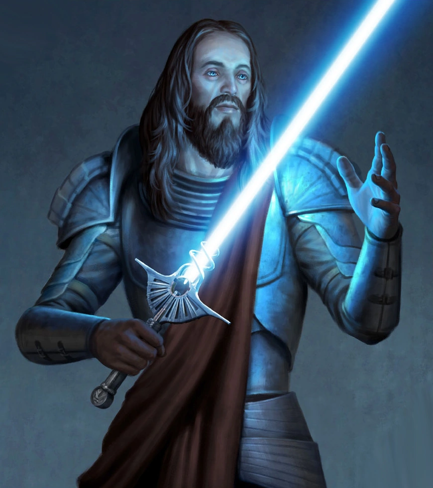
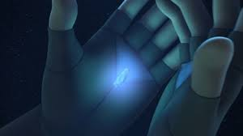

A fénykard

A fénykard vagy ritkábban lézerkard egy kézifegyver. Bár Jedik és Sithek egyaránt használták, a
fénykardokat inkább a Jedikkel azonosították, és néhányan a galaxisban úgy hitték, hogy fénykardokat
csupán a Jedik használnak.
A fénykard Jedi lovagok előírásos fegyvere. Nem olyan otromba, s nem lehet olyan vaktában lövöldözni
vele, mint egy sugárvetővel. Ennek a használatához több ügyességre van szükség, nem elegendő a
puszta látás. Elegáns fegyver, és persze jelkép is. Mert sugárvetőt vagy lángvágót akárki tud
használni, de aki a fénykarddal jól tud bánni, arról sejteni lehet, hogy nem akárki. Több mint ezer
nemzedék óta, a Jedi lovagok képviselik a leghatalmasabb és legtiszteletreméltóbb erőt a galaxisban.
Ez a fegyver reprezentálja a Jedi hatalmát, képességeit és a Jedi-Kódex iránti hűségét. Nincs még
egy olyan ősi fegyver, amit annyi rejtély és mendemonda övezne, mint a fénykardot. Hosszú történelme
alatt a fénykard alig volt több sokak számára, mint mítosz, legenda. Csak kevesen voltak, akik
elmondhatták, hogy látták a kard fluoreszkáló pengéjét, vagy hallották jellegzetes, pulzáló
zümmögését. A Jedik ritkán használják fénykardjuk, előnyben részesítik az ellenfél meggyőzését annak
legyőzésével, megölésével szemben. Ha azonban harcra kerül a sor, a Jedi nem habozik, és csak ritkán
van szükség második vágásra.
Ezeknek a kardoknak nincsen sem súlya, sem egyensúlya, mint a fémkardoknak, és forgatásukhoz is
teljesen más technika szükséges. Ezért, ha valaki gyakorlatlanul használja, legalább annyi esélye
van, hogy önmagát megsebezze, mint az ellenfelét. A fénykard segít a Jedinek a fókuszálásban, az
Erővel - amely mintha könnyebben áramlana keresztül rajta - érzi és kontrollálja fegyverét. Érzi az
energiapengét, olyan dolgokat lát és érzékel, melyeket szabad szemmel képtelen lenne, miközben a
penge halálos táncát járja a kezében.
Sokan rosszul azt hiszik, hogy a fénykard azért vág át szinte mindent, mert magas hőmérsékletet
termel. A fénykard viszont egyáltalán nem ad ki hőt. A kard ereje a benne lévő kyber kristály származik. A penge a legtisztább energiából van.
A története

Már akkor, amikor az Erő-érzékeny személyek YE 25 783-ban a Tython bolygón megalapították a Jedi
Rendet, elterjedt volt körükben különféle fegyverek használata. Később a kovácsolás és fejlett, más
világokból származó technológiák ötvözésével a Jedik megtanulták, hogyan „fagyasszák” le a
lézersugarat, ami az első komoly lépés volt a fénykard létrejötte felé.
Az első fénykardokat YE 15 500 körül alkották meg. Ezek azonban még igen instabilak voltak és
rengeteg energiát nyeltek el egy övre szerelt erőhordozóból. A túlmelegedés előtt rövid ideig voltak
használhatóak. Ezek a kezdetleges fénykardok inkább csak rituális tárgyak, nem pedig fegyverek
voltak.
A fegyver instabilitásából adódó problémákat az évezredek során sikerült eltüntetni, így YE 7000-re
az ormótlan fegyverek helyét átvette az elegánsabb és széles körben használt fénykard. Az elért
stabilitás ellenére az energiafogyasztás még mindig hátráltatta a fegyver gyorsabb terjedését, mivel
használatukkor még mindig szükség volt egy övön viselt energiatárolóra.
A fénykard történetének fordulópontja Karness Muur Sith nagyúr életében állt be, aki elkészítette az
első, modern fénykardot. YE 5000-ben, a nagy hiperűr háborúban a Sithek már előszeretettel
használták a fénykard modern változatát. Az ilyen fegyver készítésének technológiája a Jedik és a
Galaktikus Köztársaság tudomására csak a konfliktus után jutott. A külső energiahordózókat ekkorra
már felváltotta a fénykard belsejében elhelyezett energiagenerátor.
A Nagy Jedi tisztogatás után, YE 1-től kezdődően a fénykardok hatalmas értékű ereklyékké váltak
néhány gyűjtő számára. Palpatine Galaktikus Birodalmának idején számos fénykard talált gazdát a
feketepiacon. A fénykardok csak az új Jedi Rend felemelkedése után váltak ismét jelentőssé
köszönhetően Luke Skywalker tanításainak és a holokronok újrafelfedezésének.
Palpatine bukása után a Jedik ellenfelei tömegesen készítettek fénykardokat, hogy ezzel szereljék
fel egyre növekvő seregeiket. A Jedik ezek ellenére hűek maradtak a régi szokásokhoz, és
fénykardjaikat továbbra is saját maguk, az Erő segítéségével készítették el. YU 137-ben a birodalmi
lovagok is saját maguk készítették el fénykardjaikat, de azok egytől-egyig ugyanolyanok voltak.
Ezzel jelképezték azt, hogy a lovagok mennyivel kevesebb értek, mint a Birodalom, amit szolgáltak.
A felépítése
A fénykard elkészítése a Jedi kiképzés része. Néhány tanítónál ez az utolsó feladat, amit a
tanítványnak el kell végeznie, mások ezzel kezdi az oktatást. A legtöbb Jedi több fénykardot is
készít élete során. Mindegyik jobb és erősebb, mint az előző, ezzel is jelképezve, hogy készítője
előrébb lépett az Erő megértésének és használatának útján. Akárhogy is, létezik valami belső,
misztikus kapcsolat a Jedi és a fénykardja közt.
A fénykard az alábbi részekből épül fel: energiacella, markolat, aktiváló kapcsoló, biztosító,
pengehossz- szabályozó, kisugárzó mátrix, gyüjtőlencse, kyber kristály. A kard markolatában többféle
kristály lehet, a kristály tulajdonságai befolyásolják a penge fajtáját. A penge színét a kristály
határozza meg, de akár penge formáját is módosítja, esetleg megnövelheti az erejét. A Jedik kyber
kristályban gazdag barlangokban keresik meg kyber kristályukat fénykardjukba, a Sithek pedig vörös
kristályukat mesterséges úton hozzák létre.
A fénykard elkészítése egy ősi technológián alapul, ami fölött évezredek óta őrködnek a Jedik.
Néhány szóbeszéd szerint az Erő ismerete nélkül nem lehet fénykardot készíteni, bár ezt cáfolni
látszik, hogy nem Jedi is képes a fegyvert használni. Minden fénykard egy kicsit más, minden Jedi
saját ízlése szerint alakítja fegyvere külsejét. Van amelyik teljesen egyszerű és van amelyiket
faragások, díszítések borítják.
A kyber kristály

A jedi és a kristály között misztikus kapcsolat alakul ki, utóbbi ettől elszíneződik, és megadja a
fegyver pengéjének színét. Szóval a Jedi beállítottsága adja a kristály színét, hogy például az
Erővel bánik jobban, vagy inkább a kardvívásban jeleskedik.
A kristály és a használója
Csak az láthatja a kristályt, akit kiválaszt. A többi Jedi észre sem veszi a más kristály
jelenlétét. A Jedi és a kristály között egy fajta kötelék alakul ki. A kyber kristály magához
hívhatja a kiválasztott hordozót, például akár egy dallammal. Vagyis ez arra add következtetést,
hogy a kristályok nem csak átjárja az Erő mint a Legendákban, hanem maguk is Erő-érzékenyek.
Sith kristályok
A Sith-ek egyetlen esélye a kristály megszerzésére, ha elveszik azt egy legyőzött Jeditől. Ha ez
megtörténik a kristály elveszti a színét. A vörös kristályokat megrontja a sötét oldal, amikor azok,
akik birtokolják őket, rájuk erőltetik az akaratukat. Ezt úgy mondják, hogy rákényszerítik a
kristályokat arra, hogy vérezzenek. Ezért vörös a penge. A sötét oldal által megrontott kristály
helyreállíthatók, de korábbi alapszíneit már nem kapja vissza. A megtisztított kristály színe a
fehér.